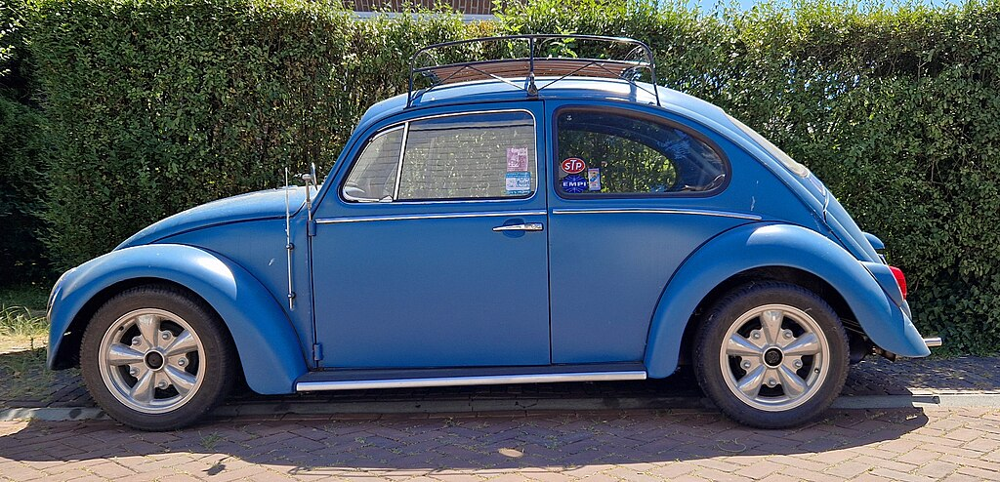

As imagem são representações bidimencionais que podem ser armazenadas em um computador com diferentes formatos. Os formatos mais conhecidos sao .jpg .gif .png dentre outros . A google lançou um novo formato denominado .webp que ocupa menos que o jpg mais que alia a versitilidade de diversos outros formatos.
As imagens locais são imagens que ficam hospedadas no mesmo servidor(PC) em que
As imagens remotas estão hospedadas em outros locais pela web.

As listas podem ser ordenadas ou não ordenadas